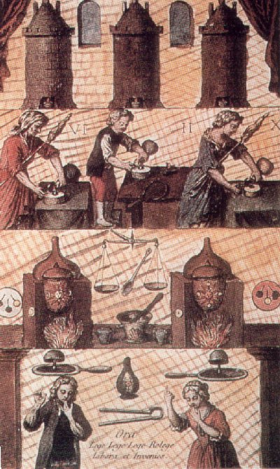
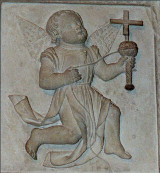
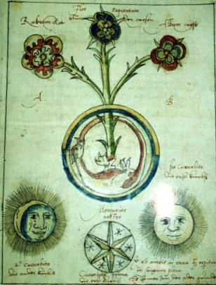
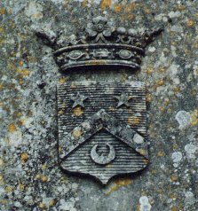
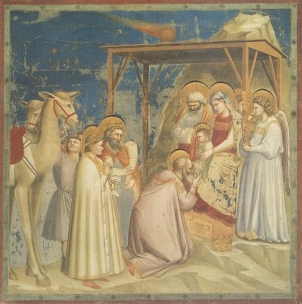
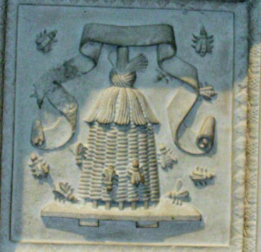
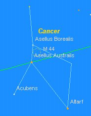
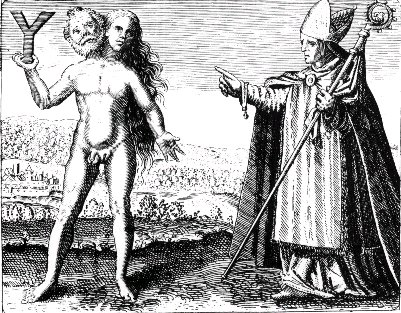
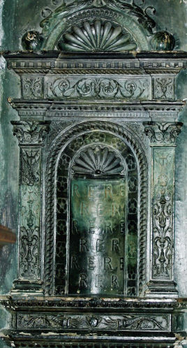
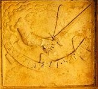

Emblema XLII.
revu le 9 mai 2002
In Chymicis versanti Natura, Ratio, Experientia & lectio, fint Dux, scipio, perspicilia & lampas.(A celui [qui] est versé dans la Chymie, la nature, la raison, l’expérience et la lecture doivent tenir lieu de guide, de bâton, de lunettes, de lampe1.)

Que la nature soit ton guide, que ton art
La suive pas à pas2 ; tu t’égares loin d’elle.
Que l’esprit soit ta canne ; affermissant tes yeux
L’expérience au loin te donnera de voir.
La lecture, flambeau brillant dans les ténèbres,
T’éclaircira l’amas des mots et des matières3.
Les accidents qui peuvent survenir aux voyageurs sont innombrables, surtout s’ils décident de faire route à pied, la nuit, dans des endroits glissants et dangereux. Pour une telle entreprise quatre choses sont requises comme absolument nécessaires, sans parler de l’argent indispensable et d’un corps robuste. Il faut d’abord un compagnon ou un guide4 qui n’ignore pas les lieux que l’on doit traverser. Car si un ignorant conduit un autre ignorant il leur arrive la même chose qu’aux aveugles, et ils sont tous deux précipités, sinon dans la fosse, du moins dans des erreurs et des chemins détournés. Il faut en second lieu un bâton ou une canne qui serve à se protéger du chemin glissant, pour qu’il ne soit pas source de dommages. Troisièmement des yeux sains : les voyages de ce genre sont en effet très périlleux5 pour les aveugles ou ceux qui ont les yeux malades. Quatrièmement, une lampe ou une torche allumée, afin de pouvoir discerner les endroits incertains de la route.
De la même manière, si quelqu’un entreprend un voyage des plus difficiles pour rechercher la Médecine des Sages, il désirera avoir avec lui, outre les ressources et la vigueur corporelle, quatre choses parallèles à celles mentionnées plus haut et leur correspondant respectivement, à savoir la nature, la raison, l’expérience et la lecture. Si l’une de ces choses fait défaut, le reste ne sera que d’une aide médiocre ou nulle. Car ce sont là comme les quatre roues du char philosophique6 qui lui permettent d’avancer : il ne peut lui manquer une roue, car dans ce cas rien ne lui sert d’exister encore. La nature présuppose les corps naturels et les esprits, sujets préalablement fournis par la nature, sur lesquels l'art agit ensuite en préparant cela, en le purifiant et en le rendant habilement tel qu’on puisse en faire ce que l’art promet comme terme. Ainsi le potier prend de l’eau et de la terre, le verrier des cendres et du sable, celui qui prépare les métaux, le fer, le cuivre, l’étain, le plomb, l’argent ou l’or, le tanneur, des peaux brutes, et ainsi de suite7. C’est ainsi également que l’artiste chymique porte les yeux sur ses matériaux : les uns connaissent parfaitement les leurs dès le premier jour, à d’autres, lorsqu’ils commencent, ils demeurent souvent ignorés durant de nombreuses années, pour ne pas dire pendant toute leur vie. La nature, certes, désigne du doigt les matières, mais nombreuses sont les choses qui obscurcissent l’impression de la nature, de telle sorte qu’on ne peut les reconnaître. La première démarche est donc de contempler profondément la manière dont la nature procède dans ses opérations pour pouvoir obtenir les sujets chymiques naturels, sans défaut ni superfluité. C’est pourquoi la nature doit être le guide et le compagnon d’un si grand voyage et il faut suivre la trace de ses pas.8
En second lieu, la raison doit être comme un bâton qui affermit les pas et assure les pieds de peur qu’ils ne trébuchent. Sans raisonnement on risquera de tomber dans des erreurs. C’est pourquoi les philosophes disent :
" A propos de tout ce que tu entends, raisonne pour savoir s’il peut en être ainsi ou non. "
Nul en effet n’est incité à croire ou à accomplir des choses impossibles, sauf si, doté d’une mémoire débile, d’un esprit obtus et d’une imagination stupide, il s’impose cette tâche en prenant le faux pour vrai et en rejetant le vrai comme faux9. Les auteurs déclarent aussi que, quoi qu’ils disent, il ne faut pas se préoccuper des mots, mais seulement des choses et de ce qui doit être compris ; les mots, disent-ils, existent à cause des choses et non les choses à cause des mots. Si l’on dit, par exemple, que le verre est rendu malléable10 par la teinture philosophique, pourquoi ne le croirai-je pas, pourvu que la raison me le dicte ? Troisièmement l’expérience donnera des lunettes permettant de voir les choses éloignées. Ce sont des instruments optiques qui aident et corrigent la faiblesse des yeux humains et ont été inventés et fabriqués par l’art11. Les expériences tentées, vues ou véritablement entendues à propos de la matière minérale leur sont très semblables12. Plus elles seront nombreuses dans la mémoire, plus la raison pourra y puiser, pour les comparer entre elles et avec d’autres, et discerner ce qui est vrai de ce qui ne l’est pas. Quatrièmement la lecture doit briller dans l’intelligence comme une lampe claire, sans laquelle il y aura de toutes parts des ténèbres et des nuages épais. La lecture des bons auteurs doit être renouvelée souvent, autrement elle ne servira à rien. D’où Bacasser dans la Turba :
" En conséquence, dit-il, celui qui sera patient et qui jouit de bon cœur de sa patience, avancera dans le juste sentier de cet art ; mais si quelqu’un pense pouvoir saisir rapidement le fruit de nos livres, il se trompe et il eût mieux valu pour lui qu’il n’y jetât même pas les yeux, plutôt que l’inverse. "13
Et la suite de ce passage.
Notes1. Avec ce chapitre, nous abordons ce qui constitue peut-être l'un des sommets de l'Art sacré. Il s'agit du plus clair et du plus exact des précis d'alchimie qu'il nous ait été donné de voir. Certes, comme tous les bons textes hermétiques, le contenu est voilé sous des apparences trompeuses. Mais si l'on suit à la lettre, à la trace plutôt, ce qu'écrit Michel Maier, il est possible d'avoir des idées claires qui permettent d'accéder au nom vulgaire des substances chimiques qui gisent sous l'allégorie et la parabole. Cet emblème nous a paru si important et si révélateur, que nous l'avons plusieurs fois incorporé à nos fichiers pour illustrer tel ou tel point de science [1, 2, 3, 4, 5, 6, 7, 8, 9, 10, 11, 12, 13,]. En bref, l'emblème montre sous la lumière de la lune en son dernier quartier [le croissant est nettement déporté à gauche ; il n'est donc pas question du Mercure entendu comme dissolvant, mais du Sel de la Lunaire, qui cache le Corps de la Pierre] un vieillard, chaussé de lunettes, tenant un bâton en une main, une lanterne dans l'autre et qui suit, à la trace, dans un chemin bourbeux, Diane dont le caractère lunaire est accusé par les plis de son vêtement.
- Le bâton cache un trait de cabale notable. En grec, bakthria, renvoie à rabdoV [baguette magique de Circé, sceptre, caducée d'Hermès, houlette de berger]. Rappelons que Circé, fille d'Hélios et de Perséis, était capable, dit-on, de faire descendre du ciel les étoiles [ce qui veut dire fixer les chaux métalliques]. Circé tient aussi de Protée car elle a pouvoir de métamorphoser les humains en animaux. C'est encore Circé qui conseille à Ulysse d'aller consulter aux Enfers le devin Tirésias, qui lui indiquerait la route la plus sûre en direction d'Ithaque. Circé [Kirkh] emprunte des traits aux oiseaux de proie [kirkh : aigle, faucon]. Comme eux, elle a pouvoir de contempler le soleil droit dans les yeux sans en être aveuglée [c'est-à-dire de le fixer, cf. humide radical métallique]. Par ailleurs, par kirkoV, c'est une imposition, une emprise, une fixation, un carcan en somme, qui doivent être prescrits dans cette partie de l'oeuvre où se joue le combat des principes contraires. Tout cela nous rapproche de l'action de fixer. Enfin, nous avons évoqué le qrakias [KirkaV], vent qui souffle en Italie [cf. Atalanta, XXXIX], semblable à celui qui souffle en Grèce. Là encore, l'allusion au Soufre est claire, mais lointaine.
- la lecture : ici, la cabale se révèle des plus difficiles à déchiffrer. Le lecteur, celui qui lit [lector] renvoie à lego [dont le sens premier est ramasser, recueillir, ce qui, dans un certain sens n'est pas faux mais ne mène à rien]. Le véritable sens hermétique du mot lecture renvoie à une autre acception de lego : enrouler, pelotonner, c'est-à-dire filer. Nous voilà ramenés à l'un des derniers emblèmes du Mutus Liber où le sens à accorder au filage est très clair.
FIGURE I
(Mutus Liber, planche XIV]Voyez le texte du Mutus Liber pour le commentaire attaché à la planche. Considérez que l'action de la fileuse consiste ici à rendre le Mercure « filant », c'est-à-dire coulant [cado, cassito], c'est-à-dire encore « dégoûtant » [dégouttant]. Tout renvoie à des matières qui doivent être tenues au feu dans un état liquide, et fluide à l'égal de l'eau. C'est ici l'occasion de revenir sur un point de symbolisme qui n'a pas encore révélé tous ses secrets : il s'agit du point de cabale touchant à la toupie et au bilboquet. Voici de quoi il s'agit. E. Canseliet écrit dans son Alchimie expliquée sur ses Textes classiques :
« Ces mots [ce qui est en haut est comme ce qui est en bas], nous les voyons qui courent en légende explicative, autour d'une dextre géante, issant d'épais nuages et s'exerçant au jeu très expressif du bilboquet, avec la boule du grand monde » [p. 198]
Canseliet fait allusion à la planche XX du recueil de Daniel Stolcius, avec cette légende :
« Le tour de main, ou tour de force, qui est à la fois initial et décisif, ne peut être accompli par l'alchimiste sans le secours du ciel. Cette force gigantesque se libère des nuages, qui en sont la condensation défavorable, pour que soit réalisé le miracle d'une seule chose. »
Ce tour de main se rapporte à une opération exercée sur la terre. Citons Fulcanelli qui se montre plus charitable que son disciple :
« Il faut ici suivre l'excellent conseil du Triomphe hermétique, et ne pas craindre d'abreuver souvent la terre de son eau, et de la dessécher autant de fois ».
Nous avons extrait ce passage des Demeures philosophales [DM, I, pp. 382-385] parce qu'il consitue la Clef de l'oeuvre pour Fulcanelli. E. Canseliet ne parle pas de ce moyen extraordinaire ou du moins en parle-t-il d'une façon si alambiquée qu'il est impossible d'en tirer quoi que ce soit de cohérent [L'Alchimie expliquée sur ses Textes classiques, p. 241] . On le trouve cité dans Huginus à Barma :
« Pourquoi donc le soufre du Soleil conjoint par un artifice philosophique avec le mercure de la Lune, ne ferait-il pas l'Electre ? Pourquoi ne ferait-il pas le Cinabre ? Et certes un lion engendre un lion, les gens forts & robustes ont des enfants qui leur ressemblent, & les aigles généreuses ne donnent pas le jour à une faible & timide colombe. » [chap. VIII]
Le point intéressant de ce texte du Règne de Saturne transformé en Siècle d'or est d'évoquer la possibilité que les ablutions philosophiques se déroulent avant la marque de la blancheur [la colombe d'Eurysthée qui franchit les roches cyanées à la sortie du Pont-Euxin, là même ou Hellè tombe, qui s'était enfuie avec Phryxos sur le bélier ailé à la toison d'or]. En effet, le texte dit clairement que ce sont les aigles qui donnent naissance à la colombe [cf. Atalanta, XLI]. Et l'electre est pareil au cinabre : il s'agit de l'Airain.
« Vous remplirez pleinement cet objet, si vous réduirez le Soleil en Soufre & en Mercure, qui sont sa première matière on substance, ou ce qui est la même chose, si par le moyen de notre Mercure & par un artifice secret, mais connu des Philosophes, vous ramenez le Soleil à l'état dans lequel il avait été premièrement mis par la Nature, c'est-à-dire, si vous le réduirez en un corps très brillant. » [Chap. XXIII]
Dans ces deux passages, l'Anonyme à qui nous devons ce texte veut clairement signifier qu'il faut incorporer le soufre et le Mercure dans un corps en fusion ; l'artifice réside dans la durée du feu, la prescription adéquate de la température, parfois enfin des manipulations qui s'apparentent davantage à des jeux comme la pelote basque ou le bilboquet. Quel rapport nous dira-t-on, entre le travail de la fileuse, le bilboquet ou la terre ? On peut faire voir le rapport tripartite [nous restons dans le symbolisme propre à Hécate] de ces « opérateurs » hermétiques par l'examen d'un caisson de l'Hôtel Lallemant, à Bourges, hôtel maintes fois évoqué dans ces pages.

FIGURE II
(le bilboquet des Sages - cliché Alain Mauranne)La figure II montre un ange en train de jouer avec une sorte de toupie tout à fait extraordinaire et dont on chercherait sans doute en vain un exemple équivalent et aussi clair pour l'alchimiste. L'ange dévide un fil qui s'enroule autour dd'une sphère surmonté du symbole cruciforme, en somme de la stibine. C'est indiquer par là le mouvement requis au 3ème oeuvre, où l'Artiste doit déclencher un va et vient incessant à son compost. On comprend, en regardant cette image, pourquoi Canseliet pense que le lieu de cette force gigantesque réside dans les nuages, et, nous pourrions ajouter, dans le ciel étoilé. Cette action, au vrai, semble déclenchée par Circé qui avait, paraît-il, le pouvoir de faire descendre les astres du ciel. Voici enfin un texte, tiré des Deux Logis Alchimiques, qui complète utilement le premier texte d'E. Canseliet que nous avons cité :
« La pénétration de la matière brute et frigide par l'esprit incisif et igné, celle du globe par le fer, demeure tributaire du tour de main que la Nature exige de l'artiste la copiant et lui aidant. C'est ce que traduit, clairement, l'exercice du bilboquet, par l'entraînement même auquel il faut s'astreindre afin d'y réussir. En l'an 1938, non sans raison, notre attention fut attirée, par l'énorme sphère placée aurpès d'un obélisque s'élevant à deux cents mètres, qui ensemble constituaient le thème sensationnel, en même temps que le " clou " de l'Exposition de New York " Bilboquet pour géant ! " écrivait l'auteur d'une chronique dans le quotidien Paris-Soir, sans doute inconscient quant à la portée de son exclamation...» [pp. 248-249]
Tout ici est crypté selon la « méthode Canseliet », redoutable au demeurant. Le globe y représente le CORPS de la Pierre, prête à être fécondée par le FER, qu'il faut lire SOUFRE. Nous avons déjà rencontré l'obélisque dans la section sur l'humide radical métallique. La matière dont elle est constituée ne peut laisser le moindre doute sur la qualité de la terre qui forme, selon l'heureuse expression de Philalèthe, « le lit douillé des colombes de Diane » et dont parlent tant Daubrée et Delesse dans leurs mémoires sur le métamorphisme des roches. Voici, du reste, ce que rapporte Dom Pernety dans ses Fables Egyptiennes et Grecques :
:« La Nature a mélangé quatre substances pour la composition de ce Pyrite Egyptien ; la principale, qui en fait comme la base & le fond, est d’un rouge éclatant, dans laquelle sont comme incrustés des morceaux de cristal, d’autres d’améthystes, les uns de couleur cendrée, les autres bleus, d’autres enfin noirs, qui sont semés ça & là dans toute la substance de cette pierre. Les Egyptiens ayant donc observé ce mélange, jugèrent cette matière comme la plus propre à représenter leurs mystères. » [citation de Kircher]
On ne saurait, en disant presque tout, être aussi aveugle. Car le R.P. Kircher, que Pernety cite beaucoup, a écrit sans doute sans le vouloir, en quelques lignes, une sorte de résumé lapidaire de 1500 ans de philosophie hermétique. Pour en revenir à la figure II, elle masque l'incrustation du Soufre rouge dans le Corps, par l'intermédiaire [le moyen, le milieu, etc.] du Mercure filant, coulant, symbolisé par ce fil de pelote que dévide notre ange, que nous avons vu compissant allègrement son sabot dans une section antérieure [Atalanta, XXXVII].
- les lunettes : leur présence s'explique pour plusieurs raisons. D'abord, elle sont faites de verre [cf. l'Art de la Verrerie]. Voilà qui peut paraître trivial, mais légitimé outre mesure si on se rapporte au contexte. Le lecteur doit, en effet, bien faire filer son ouvrage, si l'on peut dire, ce qui rend expédient de bonnes lunettes. Le mot ualoV [qui se rapporte au verre] désigne par ailleurs toute pierre transparente [albâtre, cristal, certaines pierres précieuses] et aussi un miroir ardent. On trouve dans l'iconographie alchimique de ces miroirs ardents où le soleil vient darder ses rayons dans le vase de l'Artiste. Voyez par exemple la figure VI de la section Cambriel qui en présente un magnifique spécimen. Voyez encore les miroirs de l'Atalanta, XXIX. Il n'y a là rien d'autre qu'une lueur de cabale - si l'on peut dire - qui explique pourquoi Fulcanelli dit qu'il faut capter un rayon solaire igné [ce n'est rien d'autre que l'Âme de la Pierre]. Notez encore que le miroir se dit katoptron, proche de katoptoV qui signifie « grillé ou rôti ». Basile Valentin n'a-t-il pas dit que le cygne rôti serait pour la table du roi ? Voici ce passage des Douze Clefs de Philosophie, au demeurant très clair :
« L'on doit donner à manger un Cygne blanc à l'homme double ignée, afin qu'ils se tuent l'un l'autre, et ressuscitent l'un quant et l'autre, que l'air qui vient des quatre parties du monde occupe les trois parts du logis fermé de cet homme igné, afin que l'on puisse entendre la chair du Cygne, disant son dernier adieu, et le Cygne rôti sera pour la table du Roi » [Clef VI]
Dans cette parabole, le cygne figure le Mercure ; les quatre parties du monde sont les Quatre Eléments et les trois parts du logis fermé représentent les trois principes. Le cygne rôti est le Mercure activé. Les lunettes évoquent donc le verre, le miroir ardent en se rapportant d'une part à l'aspect du Mercure en fusion et d'autre part, là encore, au Soufre rouge.
- la lampe : il s'agit en fait d'une lanterne [lucnoV]. Notre expression « fiat Lux » [que la lumière soit] exprime admirablement le symbolisme de la lanterne, vu sous l'angle de l'hermétisme traditionnel. Nous penchons pour le rapprocher du mot lucnithV qui désigne le marbre de Paros, sorte d'albâtre et aussi le rubis ou grenat, escarboucle des Sages [ce n'est même pas un trait propre à la cabale, puisqu'aussi bien le mot lanterne ou rubis se dit en grec lucneuV]. En revanche, lucneuV peut se décomposer en luc et neuV. Or, neusiV est l'action de nager, de naviguer. Voilà qui peut paraître bien osé de rapprocher ainsi deux mots qui ne sont liés d'aucune sorte : c'est la règle élémentaire de la cabale phonétique et le lecteur, nous en conviendrons volontiers, peut ici manifester un doute bien légitime sur ces rapprochements cavaliers. Certes. Toutefois, ce que nous voulons faire comprendre, en l'occurrence, c'est que nesuV, renvoyant à new [nager, filer], exprime de manière complète le symbole de la lumière sortant des ténèbres, qui flotte sur l'eau permanente des Sages, manifestant ainsi le signe étoilé dont parlent tous les auteurs [alba stella], signe dont ils ont fait leur seule et unique étoile [anqos monoV], d'où les alchimistes espiègles comme Artephius ont tiré leur antimonium, l'antimoine, l'albâtre des Sages de Fulcanelli.
2. Nous avons rassemblé dans deux sections toutes les études permettant au lecteur d'avoir une idée claire sur cette sentence des alchimistes : « la nature aide la nature », que la tradition hermétique attribue à Basile Valentin. L'une de ces sections relève d'avantage de l'Art sacré [le Mercure de Nature]. La deuxième section relève davantage de la géologie expérimentale et constitue le pendant théorique de la première section [Mémoire sur le métamorphisme des roches de Gabriel-Auguste Daubrée et AchilleDelesse].
3. L'emblème XLII montre non seulement la lune, mais Aussi Diane, parée de son vêtement étrange où se devine quelque souffle extraordinaire. C'est elle, le guide qui constitue le fil d'Ariane que l'alchimiste ne doit plus quitter dès lors qu'il le tient fermement. Ce guide [hgemoneuw] représente, au vrai, la partie dirigeante de l'âme, la faculté directrice ou maîtresse, c'est-à-dire la raison ou Esprit. C'est nommer le Mercure animé ou Mercure Philosophique. Quand Maier dit que la nature [jusiV] est le guide de l'alchimiste, il faut l'entendre d'un double point de vue. L'un se rattache directement aux procédés de nature grâce auxquels se développent les magnifiques concrétions cristallines [voyez Gabriel-Auguste Daubrée]. L'autre se rattache à un trait de cabale par une assonance phonétique entre le mot jusiV et jusa [soufflet de forge, souffle, vent]. Diane, fille de Zeus et de Latone, soeur d'Apollon, se plaît comme lui aux pays des Hyperboréens, contrée où l'on ignore ce qu'est la nuit, région qui se situe à l'évidence très loin des roches cyanées qui ferment le Pont-Euxin. Ce pays n'est autre que l'eau des alchimistes qui doit être maintenue un long temps à température constante, et forte, bref qui ne connaît qu'une seule saison unique et, à sa manière, tempérée. Comme l'étymologie l'indique, c'est après Borée [cf. Atalanta, XXV, XXX, XXXII et XL], le vent du nord, glacé et neigeux que se situe cette contrée, aussi mythique que l'Atlantide ou le Jardin des Hespérides pour le commun des mortels, et gage de sûreté pour les seuls Artistes qui auront su filer leur Mercure comme l'indique la figure I. C'est enquelque sorte le « pays de l'arrivée », la terre promise du magistère, semblable en tout point aux Champs Elysées réservés aux âmes vertueuses. Cette terre fut placée d'abord aux confins de l'Océan [Atlantide], après les colonnes d'Hercule, puis fut placé dans l'Hadès chthnonien, le corps étant d'abord porté en terre avant sa résurrection comme l'enseigent tous les bons traités sur notre sujet. Pour en revenir à Diane ou Artémis, on la nomme la « Sagittaire à l'arc d'or » [ioceaira]a ou encore la « lionne pour les femmes ». On voit ainsi qu'elle tient par Zeus du Soleil et par Léto, du pouvoir pontique du dissolvant [même chose avec Héra ou Junon]. Dans l'Iliade, elle est appelée potnia qhrwn, « la Dame des Fauves », ce qui est dire suffisamment sa proximité aux lions de l'oeuvre, serviteurs de Cybèle [Atalante et Hippoménès]. Dans les temps les plus reculés, on l'assimile encore à la déesse de la végétation [nous avons vu qu'en général, ce sont les sens les plus anciens qui se révèlent les plus exacts, vus sous l'angle hermétique ; c'est vrai par exemple pour Ploutos, etc.]. En Arcadie, elle passe pour une « Dame de l'arbre » [KedreatiV]. On apppelait encore la déesse du nom mal éclairci d'Orqia ou Orqwsia.b Noue ne trouverons point étonnant qu'elle préside aux forces exubérantes de la nature [Mémoire sur le métamorphisme des roches] et que, surtout, il s'agisse d'une déesse des sources fécondantes [l'eau et l'étain font des miracles sous terre] et des prairies bien humectées [la terre feuillée]. Artémis Diktunna protège les pécheurs et leur filet [Allusion aux poissons qu'il faut savoir prendre dans un filet, allégorie de Jean d'Espagnet dans son Oeuvre Secret d'Hermès ; il s'agit des opérations qui se passent au signe des Poissons, initiée au Verseau]. Enfin, à la pleine lune, le 16 Munychion, on célébrait la fête d'Artémis Mounikiac que Callimaque appelle la « gardienne des ports ». C'est encore la déesse de l'enfantement [dans l'oeuvre, elle aide Latone à accoucher d'Apollon, allégorie sous laquelle se voile l'extraction du Soufre rouge par le Sel incombustible] et elle est dite Lecwd, Locia ou Loceia. Artémis peut encore être porteuse d'une torche, à l'image de la lanterne, et alors, est assimilée à Hécate. D'où l'épithète de jwsjoroVe et son association à des incantations funestes où on la croit « capable de remuer les portes d'acier des Enfers », ce qui, au plan alchimique, s'avère parfaitement exact ainsi qu'on l'a fait voir dans d'autres sections. Ce n'est pas tout : non seulement jwsjoroV, mais encore amjituroV, selasjoroVf, elle se trouvera également assimilée à Selhnh, ce qui explique la présence de la lune sur l'emblème XLII. Platon rattache le nom de la déesse à to artemeV et l'explique par son « amour de la virginité ». Nous savons que la Vierge [vierge blanche] représente le Mercure animé qui se féconde lui-même de sa propre matière. Mais avant que de procréer, Artémis s'avère être une « massacreuse » [artameiV, artamoV], ce qui nous rappelle l'allégorie du massacre des Innocents, parabole géniale imaginée par Nicolas Flamel pour voiler la dissolution du Soufre dans le Mercure. Enfin, il semble qu'Artémis se rattache àla déesse Ops [OupiV : Oupis, Opis], nom sous lequel la Terre-Mère s'est d'abord installée à Ephèse.Tels sont les attribut ou épithètes d'Artémis [ArtemiV]. Ils n'épuisent pas, pour autant, le symbolisme de cette divinité qui se rattache à notre Art. Il faut encore citer le culte d'Hékatè [Ekath] que nous avons déjà envisagé [1, 2, 3, 4, 5, 6, 7, 8, 9,] : Hécate, c'est « celle qui brille au loin », divinité d'origine thrace, symbolisant les sombres idées religieuses des peuples du Nord : il s'agit là d'une lune rougeâtre, voilée de vapeurs, autrement dit d'une lune rousse. Et comme la lune a trois phases [premier quartier, pleine lune, dernier quartier], Hécate a trois têtes : c'est la triple Hécate, après
FIGURE II
(l'Hécate hermétique. Tiré de : Alchimistisches Manuscript, 1550, Ms. L IV I, UB, Basel)laquelle aboient les chiens, adorée dans les carrefours [le motif en X si cher à Fulcanelli : « potasse et soufre pour l'X » nous dit-il dans les Demeures Philosophales, là où Basile Valentin préconise de « blanchir Latone et de brûler ses livres », traduction impropre qu'il faut lire par « brûler son airain dans le feu d'écorce » -notez que les recommandations de ces deux alchimistes sont, sur le plan de la pure cabale, parfaitement équivalentes], là où les routes se divisent en trois directions [celle de l'esprit, de l'âme et du corps], déesse en somme, des évocations lucifériennes [Lucifer, l'étoile du matin]. Enfin, nous pourrions évoquer l'Artémis sanguinaire à qui étaient sacrifiés des étrangers que la mer jetait sur les côtes de Tauride [nous restons dans la tradition orthodoxe de la cabale hermétique ; voyez les récits de naufrage que nous content les alchimistes, à commencer par celui de Lulle, pour terminer par celui qui fit que se rencontrèrent un navigateur allemand et Alexandre Sethon]. C'est enfin l'Artémis d'Asie Mineure que nous avons vue adorée à Ephèse et dont le sein est couvert d'innombrables mamelles, symbole de cette action fécondante que Gabriel-Auguste Daubrée a narré dans son Mémoire sur le métamorphisme [Daubrée n'y parle évidemment pas d'alchimie, mais il a fait publier un texte sur la Génération des métaux et des minéraux, le Bergbüchlein, du plus haut intérêt]. Nous allons à présent nous concentrer sur la lune, déjà étudiée dans la section sur l'humide radical métallique. Nous n'y avons pas parlé du phénomène de la lune rousse, d'un intérêt pourtant évident, envisagé sous l'angle de l'accrétion des Soufres. Il s'agit de la lunaison qui débute après Pâques [entre le 5 avril et le 6 mai], souvent accompagnée de gelées, de vents froids [Borée], qui font roussir les jeunes pousses. Sur le sujet, on connaît des dictons...et on sait ce qu'ils valent. Mais dans notre domaine, ils prennent leur véritable sens ; qu'on en juge :
- L'hiver n'est terminé que quand la lune rousse a décliné (ou : L'hiver n'est point passé que la lune rousse n'ait décliné) ;
- Lune rousse sur la semence a toujours grande influence ;L'hiver, c'est bien sûr cette période où l'Airain, futur germe de la Pierre, n'a point encore éclos. Mais le sens de la parabole est plus profond. Il se rapporte à la teinture, par le biais de la lune rougeâtre qui, en définitive, dépeint assez bien la signifiance alchimique d'Hécate. Tout cela veut dire, en somme, que le Soufre blanc prend peu à peu, ou s'assimile plus exactement, la teinture ou Soufre rouge et ce, en masse. La date de Pâques, fixée le 21 mars, ne peut pas nous laisser dans le doute. Il s'agit de l'entrée du soleil dans le signe du Bélier, date traditionnelle qui fixe le début des travaux alchimiques, ce qu'on appelle l'époque canonique. Faut-il rappeler qu'il s'agit :
1)- chez les Juifs, de la fête solennelle, célébrée le quatorzième jour [XIV] de la première lune de leur année religieuse, de leur sortie d'Egypte [la terre noire ou limon du Nil] ;
2)- chez les Chrétiens, fête célébrant la résurrection du Christ.Est-il besoin d'ajouter que chez les Juifs comme chez les Chrétiens, Pâques correspond à une délivrance ? D'un côté, Moïse sort du pays oppresseur ; de l'autre côté, le Christ quitte le domaine des morts. Dans les deux cas, nous avons un déplacement radical qui, sur le plan de l'alchimie est exactement le même que celui qu'on observe en géologie : le passage d'un état amorphe à un état cristallisé. Dans les deux cas, ce déplacement coïncide avec l'exaltation du soleil dans le signe du Bélier, signe double là encore, où il convient de ne point confondre Ariès et Arès, ainsi que Fulcanelli nous l'a enseigné. Désirant conserver l'attitude scientifique observée par le grand Adepte dans sa trilogie, nous donnerons cet extrait d'Arago, sur la lune rousse :
Dans les nuits des mois d'avril et mai, la température de l'atmosphère n'est souvent que de 4, de 5 ou de 6 degrés centigrades au-dessus de zéro. Quand cela arrive, la température des plantes exposées à la lumière de la Lune, c'est à dire à un ciel serein, peuvent geler nonobstant l'indication du thermomètre. Si la Lune, au contraire, ne brille pas, si le ciel est couvert, la température des plantes ne descend pas au-dessous de celle de l'atmosphère, il n'y aura pas de gelée, à moins que le thermomètre n'ait marqué zéro. Il est donc vrai, comme les jardiniers le prétendent, qu'avec des circonstances thermométriques toutes pareilles, une plante pourra être gelée ou ne l'être pas, suivant que la Lune sera visible ou cachée par les nuages ; s'ils se trompent, c'est seulement dans les conclusions : c'est en attribuant l'effet à la lumière de l'astre. La lumière lunaire n'est ici que l'indice d'une atmosphère sereine ; c'est par suite de la pureté du ciel que la congélation nocturne des plantes s'opère ; la Lune n'y contribue aucunement ; qu'elle soit couchée ou sur l'horizon, le phénomène a également lieu. L'observation des jardiniers était incomplète, c'est à tort qu'on la supposait fausse. [François AragoLes remarques d'Arago ne font d'ailleurs que confirmer l'opinion d'E. Canseliet qui, dans ses écrits, a pris bien garde que l'on comprenne que les astrees, pris comme tels, étaient sans utilité dans l'oeuvre. Ce pourquoi nous leur avons consacré une section complète : l'humide radical métallique.
Astronomie Populaire, Gide, Paris, 1859]
a. qui lance du venin [ioV] ; b. cf. orqioV, qui se dirige en droite ligne, par rapport à l'hypoténuse, épithète de Horus ou Soufre en cours de réincrudation, voyez Atalanta, XL. Il s'agit de la coction régulière indispensable à la maturation des Soufres, et marque de la permanence de l'eau mercurielle en voie de coagulation. C'est donc la branche horizontale du chiffre 4 de l'écusson central que l'on voit sur la cheminée alchimique du château de Terre-Neuve, à Fontenay-Le-Comte. c. Mounikiwn, 10ème mois du calendrier attique correspond à avril et mai, c'est-à-dire aux époques où le soleil parcourt les signes du Taureau et des Gémeaux. d. lecoV a le sens de lit ou couche ; mais aussi de tombeau et de nid d'oiseau [voyez celui qui orne l'une des gravures du De Lapide Philosophorum de Lambsprinck]. Quant à loceia, outre ce qui est propre aux accouchements, la seconde acception renvoie au Mercure par « qui se cache comme en embuscade, clandestin, furtif », larron en somme, épithète que Philalèthe donne au Mercure, cf. 1, 2, 3, 4, 5, 6, - e. qui apporte la lumière, en parlant d'Hécate, d'Artémis et de l'étoile du matin, Vénus - jwV. Notez que le même mot désigne des « personnages de haut rang » ou de « haut lignage » qui ont été parfois la source d'allégories dans des traités [1, 2, 3, 4, 5, 6, 7,], en particulier ceux d'E. Canseliet. f. qui porte la lumière ; à rapprocher de purjoroV, qui porte la lumière, un flambeau. Tous ces termes font référence à un christophore, le Soufre blanc ou Sel incombustible.
L'animal consacré à Hécate est le surmulet ou poisson rouget [trigla]. Admirable correspondance hermétique entre le Soufre rouge, la lune rougeâtre et le mythe grec.
4. Nous venons de voir que ce guide était figuré par Diane. Et que le symbole lunaire lui était lié pour ainsi dire de façon consubstancielle. Ayant étudié ailleurs la Lune, nous allons nous intéresser au lieu du zodiaque qu'à tort ou à raison, les astrologues lui ont assignés : le Cancer.
La tradition tient que le Cancer soit un signe d'EAU. Dans notre système pourtant, nous en faisons un signe d'AIR. Ce signe est réputé être instable, nocturne et féminin. Jupiter y trouve son lieu d'exaltation [on connaît les rapports entre Zeus et l'AIR]. Saturne s'y trouve en exil, ce qui est une circonstance singulière. En grec, karkinoV, le nom de cette constellation évoque avant tout la tenaille du forgeron, c'est-à-dire le feu d'Héphaïstos, mais aussi le compas [le point fixe sur lequel il n'y a pas lieu de revenir, et la circonférence ou serpent Ouroboros]. En latin, le cancer évoque entre autre l'écrevisse [autre nom de cette constellation] et la chaleur violente [Orci cancri : les griffes de Ploutos, c'est-à-dire le Pluton grec]. Il est remarquable que, dans le Cancer, il n'existe aucune étoile lumineuse comme si le hasard avait prédisposé cette zone du ciel à la nuit la plus noire, se mettant d'accord en cela avec la période du grand oeuvre où domine la Nuit. C'est à J. Schiller que l'on doit l'assimilation du Cancer à Saint Jean l'Evangéliste. Faut-il rappeler que ce saint faisait de l'or, et changeait les pierres les plus communes en pierres précieuses pour secourir les pauvres ? Que dans l'Azoth, attribué à Basile Valentin, c'est un ange immense, celui de la parabole de Saint Jean, dans l'Apocalypse, - qui foule la terre d'un pied et la mer de l'autre, tandis qu'il élève une torche enflammée de la main droite et comprime, de la gauche, une outre gonflée d'air, figures claires du quaternaire des éléments premiers : terre, eau, air, feu [Demeures Philosophales, I, p. 244] ? Fulcanelli citant l'Apocalypse, Ch. IV, v. 6 et 7 écrit ceci :« Il y avait aussi devant le trône, écrit saint Jean, une mer de verre semblable à du cristal...» [Myst. Cath., p. 217]
L'allusion est parfaitement claire. Toutefois, pour rétablir la vérité, il faut ajouter que Saint Jean l'Evangéliste a été confondu avec le vieil alchimiste grec Jean l'Archiprêtre, ou Jean d'Alexandrie d'après d'autres textes. Il a été identifié au Moyen Âge avec Jean l'Evangéliste, par suite de ces confusions nominales si fréquentes à cette époque et qui se traduisent dans la prose célèbre d'Adam de Saint-Victor attribuant les vertus du transmutateur à saint Jean l'Evangéliste [Berthelot]. Au plan de l'alchimie opératoire, le signe du Cancer comme d'autres, est un gage sur l'avenir, riche de promesses. Lisons Saint-Jean :
« En vérité, en vérité, je vous le dis, si le grain de froment, tombant en terre, ne meurt pas, il demeure seul ; mais si'il meurt, il porte beaucoup de fruits. » [XII, 24, cité par E. Canseliet, in préface à la 3ème édition du Mystère des Cathédrales, p. 32]
Le grain de froment est bien sûr assimilé au Christ et les fruits peuvent représenter le Christianisme ; l'alchimiste est en droit d'y voir une indication sur l'or enté [c'est-à-dire la terre feuillée préparée]. Et ce n'est pas un hasard, certes, si dans l'iconographie chrétienne, plusieurs saints ont auprès d'eux un dragon agressif ou soumis...Fulcanelli cite en note un autre passage de l'Apocalypse, ch. X, V. 1 à 4 8 et 9 et rapproche la parabole de la Vision survenue en songeant à Ben Adam, au temps du règne du roy d'Adama, laquelle a esté mise en lumière par Floretus à Bethabor [Bibl. de l'Arsenal, ms. 3022, 168, S.A.F., p. 14]. Voyez cet autre extrait :
« Et c'est sous la figure d'un être de jaspe et de sardoine couleur de flamme, assis sur un trône incandescent et fulgurant, que saint Jean décrit le Maître de l'univers : " Notre Dieu est un feu dévorant " (Apocalypse, IV, 3, 5) » [Demeures Philosophales, II, p. 212]
Peu de paroles suffisent au Sage, dit-on. Nous attirerons néanmoins l'attention du lecteur sur la transformation d'argiles en jaspe imitant la porcelaine, au contact de roches trappéennes [Mercure de Nature, Mémoires de Daubrée et Delesse]. Sur la sardoine ou cornaline, on raconte des légendes bien intéressantes que nous avons rapportées dans la section du Soufre. Voyez aussi les belles synthèses de Pierre Berthier. Un dernier extrait montre la quintessence de l'art de Fulcanelli. Il est tiré d'un très bref chapitre des Demeures Philosophales, intitulé le Règne de l'Homme :
« On y voit donc la lance de Longin (Jean, XIX, 34) assemblée au roseau (Matthieu, XXVII, 48 ; Marc, XV, 36) ou tige d'hysope supportant l'éponge imprégnée d'oxycrat (Jean, XIX, 34) ; puis le faisceau de verges et le flagellum entre-croisés (Jean, XIX ; [...] ) » [DM, II, pp. 332-333]
La lance de Longin est le premier agent ; l'hysope est une plante qui donne des fleurs violettes [épithète de la conjonction des Soufres, vers la fin de la phase de putréfaction. Mais remarquez que l'hysope - usswpoV - se rapproche de ussoV, javelot ou pilum romain confirmant bien que nous sommes à un moment de l'oeuvre où les roches cyanées n'ont pas encore été franchies] ; l'oxycrat est un mélange d'eau et de vinaigre, définition du Mercure [l'eau pontique, par oxuV : acéré, piquant. Oxua : arme en bois de hêtre comme épieu ou javelot, renvoyant là encore à la ponticité de l'eau des Sages]. Le faisceau de verges n'est autre que le faisceau de torches [pura], c'est-à-dire le feu d'écorce [voyez l'Atalanta, VI]. L'allusion au Règne de l'homme, qui succède au règne de Dieu, résulte de la parabole de l'âme qui se fait chair, si l'esprit a été correctement porté sur les eaux.
Pour en revenir plus directement au Cancer [Ecrevisse], remarquons d'abord qu'il se situe juste après le solstice d'été, c'est-à-dire à la canicule et que la constellation est alors au zénith dans le courant du mois de mars, peu avant minuit. Voilà des indications à méditer. L'hiéroglyphe du Cancer, deux virgules renflées d'un bord, placées en vis à vis, et tête bêche, évoque une idée de circulation et aussi de maturation, la trace de la virgule signalant en outre l'état visqueux ou fluide. Le tout, en somme, se signale à l'attention par un mouvement tourbillonnant où quelque convection peut aisément se deviner. Au juste, il s'agit des Soufres en fusion dans le Mercure. On comprend par là que le signe des Gémeaux est pour ainsi dire congénère de celui du Cancer : l'un nous donne des indications sur la structure hermétique ; l'autre nous offre une image, comme photographique, du processus en cours. Bien sûr, des différences sautent aux yeux, puisque dans un cas, les Gémeaux, c'est à Mercure que nous sommes renvoyés, au lieu qu'avec le Cancer, c'est à la Lune. Il se trouve que le trait d'union entre Mercure [EAU] et la Lune [AIR] est Vénus [TERRE]. Nous laisserons au lecteur le soin de poursuivre leurs méditations là-dessus. Quoi qu'il en soit, la tradition astrologique [qui n'en est pas à une contradiction près] fait du Cancer le signe aquatique, envisagé en tant qu'eau originelle. Nous savons cependant que le Soufre sort de son inertie dans l'AIR : c'est ce qu'affirment tous les bons auteurs, à commencer par Michel Maier [Atalanta, XXXVI]. Voilà l'un des points les plus difficiles à comprendre en matière de cabale hermétique : que les alchimistes nous fassent prendre de l'EAU pour de l'AIR. Il est vrai que leur eau est tellement particulière, si spéciale, qu'on leur tiendra pour dérogation de leur apparente erreur, le secret qu'ils veulent nous exprimer au travers de toutes leurs allégories et paraboles. Ce que l'on comprend mieux, en revanche, c'est que le Cancer soit synonyme de médiation, la marque du milieu. Ce signe représente l'opération, qui est clairement indiquée par le blason ci-dessous. Ce blason se trouve dans le château de la Court d'Aron, à Saint-Cyr en Talmondais. Il s'agit d'un édifice du XVIe largement modifié au siècle dernier, Il fut en fait reconstruit par Octave de Rochebrune, le restaurateur de Terre-Neuve, pour l'archéologue Benjamin Fillon. Nous retrouvons là une vieille connaissance [cf. Fontenay].

FIGURE III
(anatomie du Cancer ; château de la Court d'Aron - cliquez sur l'image pour une photo globale du château)Nous reconnaissons, sur une matière où le temps a laissé des empreintes qui ne peuvent pas rester lettre morte, nos deux natures métalliques [les étoiles] avec lesquelles il convient de réaliser la conjonction radicale des principes contraires. L'opération consiste à employer la tenaille d'Héphaïstos [le signe du feu], de façon à obtenir la première couronne [l'Airain]. Si nous tenons compte que le Cancer occupe au ciel des philosophes une étendue qui chevauche une bonne partie du segment joignant la très lumineuse b Geminorum [Pollux, cf. Atalanta XXV], à a Leonis [Regulus] ; que le signe est d'autre part entouré au nord par le lynx, à l'est comme il vient d'être dit par le Lion, au sud par l'hydre femelle, et à l'ouest par le Petit chien et les Gémeaux, nous aurons détaillé tous les rapports qui permettront à l'Artiste d'apprêter ses instruments. En effet, il n'aura pas échappé au Fils de Science que Pollux s'apparente au SEL incombustible qui doit recevoir la teinture, ici représentée par Regulus dont le nom se passe de commentaire. Voici ce qu'écrit Ptolémée, dans sa Tétrabible :
« Des étoiles qui sont dans le Cancer, les deux situées sur les yeux génèrent les mêmes effets que ceux de l'astre de Mercure et, partiellement, les mêmes que ceux de l'astre de Mars ; celles qui se trouvent sur les pinces priduisent des effets similaires à ceux des astres de Saturne et Mercure ; et l'amas nébuleux sur la poitrine, appelé la Crèche, crée les mêmes effets que ceux de l'astre de Mars et de la Lune, alors que les deux étoiles que la Crèche a de l'un et l'autre de se côtés, les Ânons, génèrent des effets similaires à ceux de l'astre de Mars et du Soleil. » [Le Livre Unique de l'Astrologie, Ptolémée, trad. Pascal Charvet, Nil, 2000]
Précisons que la Crèche du Cancer prend pour nous le sens d'abri, de maison, en un mot, de vase. On connaît encore cet amas ouvert sous les noms de Praesepe ou encore la Ruche. On reconnaît là les signes distinctifs de la « maison du Poulet » : les alchimistes donnaient différents noms à l'oeuf philosophique. Selon Flamel, il était nommé : sphère, lion vert, prison, sépulcre, fiole, cucurbite, maison du poulet [le poulet d'Hermogène], chambre nuptiale, etc. Quoi qu'il en soit, la crèche [jatnh] est un lieu hermétique de première importance : faut-il rappeler que c'est là, dans une mangeoire, que fut déposé Jésus à sa naissance ? Il serait peut-être plus conforme à la doctrine d'ajouter qu'il s'agit du lieu où l'on reçoit les enfants dont la mère travaille jusqu'à ce qu'ils puissent entrer à l'école maternelle [comprenez qu'il s'agit des natures métalliques qui doivent, dans un premier temps, être dissoutes - putréfaction - avant que de pouvoir être travaillées, en quelque sorte, par l'esprit ; et que la mère n'est autre que le mercure, qui s'apparente aux boeufs de labour, que l'on contraint à labourer le champ de Mars, pour en faire notre terre feuillée ; la crèche étant leur mangeoire ou râtelier]. Il paraît que c'est le passage de la comète de Halley, en 1301, qui inspira Giotto pour peindre, dans la chapelle des Scrovegni à Padoue, l'étoile des rois Mages au-dessus de la crèche de Bethléem.

FIGURE IV
(L’Adoration des Mages, 1302-1305, Giotto)Notez que cette comète se retrouve sur la tapisserie de Bayeux, sur un épisode de la vie du roi Harold, en 1066, à Hastings. Profitons-en pour ajouter [cf. humide radical métallique] à ce que nous avons dit déjà sur les comètes, qu'il s'agit d'étoiles filantes permanentes, sorties de nulle part, promises à disparaître pour des temps le plus souvent inconnus : telle et la marque du Mercure. Même si le mot crèche fait défaut dans le glossaire de nos alchimistes modernes, ils ne se sont pas moins servis du riche symbolisme qui y gît :
« Vous trouverez un Enfant enveloppé de langes et couché dans une crèche » [Myst. Cath., p. 71]
Mettez en parallèle les langes de l'enfant et les laitues [euphorbes] qui enveloppent le corps d'Adonis ; vous contournerez alors facilement la difficulté [Atalanta, XLI]. Sur les rapports évidents entre la crèche et le fumier, voyez Atalanta, XXXV et notre étude sur Alexandre Sethon. Fulcanelli évoque encore la crèche à la p. 67 du Mystère des Cathédrales, à l'occasion de l'analyse du sens des rois Mages. Assez sur le sujet.
Laruche, quant à elle, a été tellement évoquée [43 occurrences, cf. recherche] dans ces pages que nous trouvons mieux de passer outre. Pourtant, il nous paraît avoir oublié de préciser un petit trait de cabale touchant à l'essaim d'abeilles [smhnoV, ruche, essaim et, pour le Cancer, la nébuleuse de la Crèche]. Par la racine smhn, c'est-à-dire, smaw [nettoyer, laver, mais aussi oindre, enduire ce qui évoque une idée de blanchiment en même temps que de façonnage], il faut en rapprocher le travail d'Hercule sur les Ecuries d'Augias, qui trouve ici sa place légitime. On trouve d'ailleurs une magnifique ruche au plafond de la chapelle de l'Hôtel Lallemant, que n'a pas manqué de visiter Fulcanelli. Par métonymie, la ruche, c'est aussi l'abeille. L'abeille se rattache au symbole royal, de type solaire, mais qui n'est encore qu'à peine perceptible et, pour tout dire, nébuleux. Il s'agit donc du symbole de l'âme, parfois identifiée à Déméter dans la religion grecque, où elle peut figurer l'âme descendue aux Enfers. Nous en sommes bien d'accord et, une fois de plus, nous ne pouvons être qu'émerveillés par les coïncidences surgissant entre le mythe et l'alchimie par le truchement de l'hermétisme. C'est une figuration du Verbe, avant qu'il se fasse chair, et l'on comprend que le vase de nature puisse être comparé à un joyeux atelier plutôt qu'à une sombre usine [les apparences sont trompeuses, qui en font le Pont-Euxin, dans le premier travail]. C'est que les abeilles, à l'égal des anges [raison pour laquelle, d'ailleurs, on voit une ruche au milieu de ces anges des caissons de la chapelle], tiennent lieu d'anamatrices, c'est-à-dire d'intermédiaires entre le ciel et la terre ; elles en viennent à symboliser le principe vital [la rosée de mai, le miel, c'est-à-dire le Mercure animé]. D'où l'idée que l'abeille représente l'esprit s'enivrant [à l'instar de Bacchus] du pollen de l'âme. Ces abeilles, on les trouve figurées sur des tombeaux, où elles annoncent la résurrection future [on ne les voit pas durant les trois mois d'hiver correspondant aux signes du Sagittaire, Capricorne et Verseau]. L'abeille, enfin, est double : par son miel, elle assure la génération, tandis que par son dard, c'est le venin [ioV] qui est infligé, que l'on peut assimiler à l'exercice de la Justice. Le symbolisme de l'abeille évoque, ainsi, les notions de sagesse [le Mercure préparé] et l'immortalité de l'âme [projection du Soufre, en masse, dans le Sel]. Ne nous étonnons pas, dès lors, que l'abeille soit comparée à un être de feu, douée de nature ignée, à l'instar du Mercure, tout d'EAU et d'AIR, moyen pour le FEU d'être transmuté en TERRE. En bref, elle brule par son dard, qui représente le « vinaigre très aigre » ou premier état du Mercure, puis elle illumine par son éclat, le miel se confondant alors avec le principe de Vierge-mère, la Vierge étant, rappelons-le, le second domicile de Mercure. Tout porte donc à croire que le Cancer soit l'instrument de la Balance, et qu'il permette à l'Artiste d'ajuster la quantité d'EAU [Gémeaux] en vue de la qualité de TERRE [Vierge] qu'il souhaite imprimer à sa Pierre.
FIGURE V
(Hôtel Lallemant - plafond de la chapelle - détail ; cliché Alain Mauranne)Ajoutons à cela qu'Aristée, fils d'Apollon et de Cyrène, présidait aux travaux de la campagne et que, notamment, il était très versé dans l'apiculture. Aristée savait donc faire de belles âmes ; il aimait les Dryades [les déesses incarnées du chêne] et notamment la nymphe Eurydice. Celle-ci, poursuivie de ses ardeurs, en s'nfuyant dans les bois, se fit mordre par un serpent et en mourut. Ce n'était pas de la faute d'Aristée, mais les Dryades décidèrent de se venger et firent périr les abeilles. Ce dernier, en pleurs, alla trouver sa mère, Cyrène, qui lui conseilla d'aller consulter le devin Protée. Celui-ci, on l'a dit ailleurs, se prétait de mauvaise grâce aux demandes de conseil et il fallait l'enchaîner pour qu'il ne pût s'échapper ou se métamorphoser. Enfin, le devin accepta finalement de lui suggérer de sacrifier quatre taureaux et quatre génisses pour apaiser les mânes d'Eurydice. Lorsqu'il revint neuf jours après le sacrifice, Aristée paerçut de smilliers d'abeilles qui s'échappaient des entrailles des animaux [le Soufre en cours de réincrudation].
Dans le chapitre sur Bourges, dans le Mystère des Cathédrales, Fulcanelli ne semble pas avoir dévoilé tout l'hermétisme des caissons de la chapelle de l'Hôtel Lallemant [cf. p. 200] mais il est vrai que l'ouvrage aurait fait, alors, plus de 3000 pages. Au XXIe siècle, Internet permet ainsi de réaliser des miracles. Mais revenons au Cancer et à la nébuleuse de la Crèche. On y voit deux étoiles qui encadrent la scène de la naissance : la première est Asellus Borealis, étoile blanche ; la seconde est Asellus Australis, soleil jaune. Ces étoiles donnent les deux couleurs qui succèdent au noir, conformément à la doctrine. A propos de l'Âne, il nous revient en mémoire un chapitre qu'E. Canseliet a consacré à cet animal, dans ses Deux Logis Alchimiques : l'Âne chantant sa Messe. Il nous paraît d'autant plus important d'y consacrer ici quelques mots, qu'un texte juridique moyen-gallois dit que :« la noblesse des abeilles vient du Paradis et c'est à cause du péché de l'homme qu'elles vinrent de là ; Dieu répandit sa grâce sur elles et c'est à cause de cela qu'on ne peut chanter la messe sans la cire [d'abeille] »
L'âne [kanqwn] est, comme le boeuf, une bête de somme. La deuxième acception du mot grec renvoie au scarabée [kanqaroV] dont nous avons déjà parlé ailleurs. La signifiance alchimique de l'âne tient aux deux paniers qui pendent de chaque côté de son bât [kanqhlioV], c'est-à-dire du harnais. Ce harnais, s'apparente au joug qui permet d'accoupler les chevaux ou les boeufs d'un char [cf. AtalantaXLI, XXII]. Et ces paniers figurent les deux Soufres, à l'instar des deux bahuts que l'on aperçoit dans les Deux Logis Alchimiques d'Eugène Canseliet lors de l'examen de l'un des caissons du château du Plessis-bourré : L'Eléphant, le Singe et les deux Bahuts. C'est Saturne flanqué des deux composés du Rebis. Or, la constellation du Cancer permet de repérer immédiatement les trois principes des alchimistes.

FIGURE VI
(les trois principes ; image obtenue par Cybersky)Quatre étoiles nous intéressent : Asellus Australis, Acubens, Altarf et Asellus Borealis. Plusieurs points sont à développer :
- point 1 : Asellus Australis est sur l'écliptique, à très peu près. L'étoile est donc sur le trajet des principales planètes qui sont assimilées aux chaux métalliques des Anciens ;
- point 2 : Altarf est l'une des deux pinces du Crabe ; sa forme est en demi-lune. C'est l'un des deux Soufres, en l'occurrence le rouge comme en témoigne la couleur jaune-orangé de l'étoile [b Cancri] ;
- point 3 : Acubens est l'autre pince du crabe ; mêmes remarques que pour Altarf, à ceci près que sa couleur se rapproche du blanc [a Cancri] : c'est l'autre Soufre, qui symbolise le SEL incombustible ou Corps de la Pierre ;
- point 4 : Asellus Australis, on le voit par le dessin de la constellation, est notre âne qui supporte les panniers, c'est-à-dire a et b Cancri.
- point 5 : Asellus Borealis achève le système et donne à l'ensemble la forme d'un Y inversé où l'on reconnaît la forme de l'Airain des Sages. Entre les deux Asellus, se nîche l'amas ouvert M 44, appelé encore la Crèche, poussière d'étoiles figurant le démembrement des parties du corps d'Osiris.Cette image générale de la figure du Cancer peut se trouver aisément dans l'iconographie alchimique. Nous en avons un bon exemple avec une gravure extraite d'un autre traité attribué à Michel Maier, le Symbola aureae Mensa, datant de 1617.

FIGURE VII
(Symbola Aureae Mensa, Maier, 1617)Par parenthèse, cette image du Rebis ou des Noces Chymiques se retrouve chez d'autres auteurs, dans l'une des Douze Clefs de Philosophie de Basile Valentin et dans les ouvrages de Mylius, tels que la Philosophia Reformata. Cette lettre Y, au vrai, est aussi un u majuscule grec [U], première lettre du mot ualoV qui désigne toute pierre transparente [albâtre, cristal, certaines pierres précieuses]. Notez qu'on peut y voir aussi un l grec minuscule [l], première lettre du mot lukh, lumière. Ces conjectures, notez-le bien, ne sont données qu'avec prudence et pour mémoire. Dernier mot de généralités sur le Cancer, les mythographes rapportent qu'Héra [66 occurrences, cf. recherche] l'aurait envoyé combattre Hercule, durant son Travail contre l'Hydre. Voyez la-dessus la section Fontenay.
- premier décan du Cancer : l'image représente une femme à l'ovale régulier, aux cheveux abondants, fins et clairs, ses yeux gris-bleu ont le reflet glauque de l'eau dormante. Son regard est plein d'une douce poésie ou d'une langoureuse tristesse et montre qu'un rêve bleu l'enchante ou qu'une noire mélancolie l'absorbe. Elle tient entre ses mains un voile flou portant le signe de l'Ecrevisse, cancre aquatique dont la marche lente et parfois rétrograde rappelle qu'à partir du 21 juin, le soleil semble rétrograder. Ce décan, pour les astrologues, montre l'inconstance et donne l'amour du changement. Il marque, de façon générale, la lenteur, l'absence de courage physique où l'on devine de la fluence mais une vie intérieure intense faite de caprices ou de rêveries. C'est l'une des époques de l'oeuvre où le rôle de l'Artiste est fondamental dans la conduite des feux. Dans ce décan, l'Aurore est marquée par un fait singulier : l'alignement - qu'il faut comprendre par l'esprit - entre le Soleil, Sirius et Procyon. Cet alignement annonce, sans qu'elle soit encore effective, la chaleur caniculaire. C'est Procyon [Prokuwn], c'est-à-dire le « chien aboyeur » qui est alors le guide. Or, il se trouve qu'en latin, le verbe latro [aboyer] renvoie à « larron » qui n'est autre que le Mercure [cf. Introïtus, VI].
La ligne courbe figure l'horizon. On a tracé une droite fictive qui met en évidence l'alignement réalisé entre les trois étoiles [de grâce, qu'il faut comprendre avec un grain de sel...Il est évident que pour un cartésien, tout cela est une absurdité totale]. L'intérêt hermétique de cette figure est de faire comprendre que la canicule, en alchimie, s'obtient avec un feu de bois [d'écorce pour préciser]. En effet, en grec, le verbe aboyer [ulaw] est proche d'assonance avec ulh, le bois, la forêt. Mais ulh, pour le lecteur qui souhaiterait approfondir, c'est encore un résidu matériel, la partie grossière d'un corps ou, tout bonnement, de la lie de vin [cf. tartre vitriolé]. Douterait-on de cette conjecture ? Nous invoquerions Salomon Trismosin :
« [...] que si le même n'arrive à ces corps métalliques, qu'ils ne perdent leur premier et naturel être, pour reprendre plus de lustre et de perfection en notre ouvrage, la première matière détruite en introduisant une autre par génération, c'est en vain travailler et dissiper ses veilles et son huile pour aboyer après le vent. » [Toyson d'Or ou Fleur des Trésors]
Il est bien question ici de la dissolution radicale des chaux métalliques dans le Mercure. Aboyer contre le vent, c'est chercher son FEU, ce qui nécessite, c'est l'objet de l'emblème XLII, à la fois un guide, un bâton, des lunettes et une trace sûre. En ce qui concerne Sirius, voyez 1, 2, 3, 4, 5, 6, 7,
- deuxième décan du Cancer : l'image représente un vaisseau, toutes voiles dehors. A l'horizon, dans un ciel d'une harmonieuse pureté, montent soudain d'épais nuages, signes précurseurs de quelque proche tempête. Les flots bleus et diaprés commencent à moutonner, tandis que sur un roc, brusquement foudroyé, un bel adolescent, dans toute sa puissance, dans toute sa quiétude, s'affaisse. Ce décan constitue donc un avertissement sur un danger potentiel qui peut venir troubler la quiétude de l'esprit, en raison de l'apparition d'un facteur de discorde. En bref, il prévient contre les inimitiés occultes, des faits brutaux et des déplacements contrariés. L'explication à donner de la parabole est plus délicate que pour le premier décan. Ici, il faut considérer surtout la marche du Soleil et voir qu'à peu près au début du second décan, celui-ci occulte d Cancris, c'est-à-dire Asellus Australis, autrement dit le joug qui contraint les Soufres. C'est donc la phase de putréfaction totale qui est par là signifiée. La mise au tombeau des corps. C'est véritablement le début du grand magistère, le début du voyage des Argonautes. Ici, les Soufres ploient sous les fourches caudines du Crabe ; ici, ils passent sous la poutre ou chevron, au lieu-dit sororium tigillum. [consacré à Junon, où était installée la poutre sous laquelle, comme sous un joug, le jeune Horace avait dû passer pour expier son crime]. Il y a là un trait de cabale. Le chevron, en grec, se dit dokiV. C'est le faîtage d'un toit. Sa forme est donc la suivante : L. Nous y retrouvons le symbole du FEU [cf. figure III]. Il y a plus : dokiV, c'est le nom d'une formule algébrique : n.a2 [comme 4x3x3 ou 5x3x3] où l'on peut voir le produit de trois matières : le Mercure et nos deux Soufres. Ce faîte est le lieu magnétique qui ne se trouve pas au ciel vulgaire, mais au firmament des Philosophes, lequel est le toit de leur petit monde, c'est-à-dire le lieu de la sublimation, là où s'envolent les colombes de Diane, là où nagent les poissons gras de Jean d'Espagnet, là encore ou se cueillent les fruits du Jardin des Hespérides, là enfin où l'on pénètre dans les salons colorés du Songe Verd.. Notez que si Procyon se levait au premier décan, ici, c'est Sirius qui se lève [cf. supra]. Ce second décan permet en outre de donner une explication claire de l'énigme laissée par Fulcanelli irrésolue, touchant à la crédence de la chapelle de l'Hôtel Lallemant.

FIGURE VIII
(détail de la crédence de la chapelle de l'Hôtel Lallemant - cliché Alain Mauranne)Cette énigme est située aux pages 203-206 du Mystère des Cathédrales. La solution consiste tout unîment à employer la formule du chevron [dokiV] en examinant les trois premières étoiles de la constellation du Cancer. Donnons la lettre R à chaque Soufre ; la lettre E à Asellus Australis : nous aurons les deux combinaisons RE, formant la répétition RERE et, en outre, nous aurons la séquence RER, suite de trois lettres sur laquelle Fulcanelli n'a pas voulu s'expliquer :
« Nous voudrions être aussi clair dans l'explication du second terme RER, mais il ne nous est pas permis de déchirer le voile du mystère qu'il recouvre. » [p. 204]
Faut-il voir dans ce jeune homme foudroyé Cithéron, qui avait dédaigné l'amour de Tisiphone, l'une des trois Erinyes ? On peut le conjecturer, surtout au vu de ce que nous dirons du troisième décan du signe. La légende rapporte que l'un des cheveux de Tisiphone [voyez l'allusion aux cheveux fins de la jeune fille du 1er décan] se transforma en serpent [allusion évidente au Mercure et autre version du mythe d'Adonis] qui le piqua et l'envenima mortellement, au pied de la montagne qui porte, depuis, ce nom [cf. Atalanta, XVI]. Kiqairon [Cithéron], outre qu'il était un beau jeune homme, a comme autre acception, la poitrine [kiqaroV], dont on a vu supra qu'elle se rapportait à la nébuleuse de la Crèche, où le Soufre se trouve dans un état de division extrême [c'est le résultat du démembrement d'Osiris]. Voyons à présent le cas de Tisiphone [Tisijonh]. Comme on l'a vu ailleurs, elle est munie de fouet [nous ajouterions un faisceau de verges, eu égard à ce que nous avons dit supra] ou plutôt du feu d'écorce qui va permettre de rendre l'occulte manifeste, comme l'enseignent tous les bons traités sur notre Art.
- troisième décan du Cancer : l'image représente le secours providentiel et souvent inconnu. Flambeau au poing, fendant l'épaisseur des nuages, il descend dans la nuit qu'il dissipe de sa vigoureuse ardeur, mettant en fuite les puissances troubles des ténèbres. Cette délivrance ne sera salutaire que par la violence de sa soudaineté.. Ce décan est celui de l'amitié et de l'appui sur lequel on peut compter en toute circonstance. Au vrai, il réchauffe l'âme et la fortifie. Il apporte de la clarté dans le mystère et rend manifeste ce qui était auparavant demeuré occulte. Nous avons déjà tout dit sur le flambeau. Il manifeste la fin de la phase de putréfaction dont le signe avant-coureur semble être les irisations qui signalent le début de la conjonction des principes. Mais auparavant, examinons cette image du secours : il se présente, chose singulère ! a priori comme une vengeance. En effet, il n'est pas difficile de reconnaître dans ce bon secours l'une des trois Erinyes : Tisiphone [la vengeresse du meurtre].
Munies de fouets, portant des torches [il s'agit en fait d'un faisceau de torches, de pura ; c'est du feu secret qu'il est question] , les trois Erinyes, Alecto, Tisiphone et Mégère, possèdent un corps ailé à la chevelure de serpents, et sont les ministres de la vengeance des dieux. Elles parcourent la surface de la Terre pour tourmenter les mortels coupables. Selon Hésiode, elles sont nées de la Terre fécondée par le sang d’Ouranos, mutilé par Cronos. Eschyle attribue la paternité des Erinyes à l’Achéron, uni à la Nuit. Divinités infernales, elles pourchassent sans relâche les criminels qui, par leurs mauvaises actions, ont troublé l’ordre public et social. Elles envoient parfois des punitions collectives à toute une région sous forme d’épidémie. Mais, le plus souvent, elles poursuivent le criminel en lui inspirant des remords, la crainte du châtiment, l’angoisse sans fin ; Oreste, meurtrier de sa mère, est le type du héros qui n’échappe pas aux Erinyes. Elles peuvent provoquer haines inexpiables, comme celles qui opposèrent Étéocle et Polynice. Leurs actions démoniaques s’étendent également au Monde souterrain : elles torturent les âmes des humains qui se sont rendus coupables d’impiétés et de parjures. Elles les fouettent et les insultent. Aussi était-ce avec une certaine crainte qu’on parlait de ces divinités, dont le nom d’Erinyes était remplacé, selon un superstitieux euphémisme, par le terme d’Euménides, les « Bienveillantes». Toutes ces réflexions vont dans le même sens : celui d'une action première qui prend un masque pontique [tranchant], suivie d'une autre action, de synthèse celle-ci. On trouve dans les Demeures Philosophiques, dans l'examen du grimoire lapidaire du château de Dampierre-sur-Boutonne, un caisson dont le phylactère résume très bien la traduction alchimique qui découle de l'action exercée par Tisiphone. Il s'agit du caisson n°5, 6ème série : une main céleste, dont le bras est bardé de fer, brandit l’épée et la spatule. Sur le phylactère,
FIGURE IX
(plafond de la galerie de Dampierre-sur-Boutonne, détail)on lit : .PERCVTIAM.ET.SANABO. : « Je blesserai et je guérirai », parabole de la conjonction du soufre et du mercure. Fulcanelli [DM, II, p.167] nous précise :
« Nous pourrions faire une intéressante remarque au sujet du moyen, ou instrument, expressément figuré par le brassard d’acier dont est muni le bras céleste...nous...préférons laisser à qui voudra s’en donner la peine le soin de déchiffrer cet hiéroglyphe complémentaire »
C'est ce qu'exprime le mot timwria qui a le double sens de « secours, protection » et aussi de « châtiment, vengeance. »
5. c'est le sens qu'exprime le 2ème décan du Cancer, à l'époque où Sirius se lève, c'est-à-dire lors de la canicule.
6. sur les chars, voyez les gravures en couleur du Splendor Solis [alias Toyson d'Or].
7. Tout est dit en cette phrase : considérez attentivement les allusions au potier et au verrier et voyez ce qu'était le fabuleux verre malléable, chez les Anciens [Atalanta, XV, XXIV, XXXV, XLI]. Voyez encore l'Art de la Verrerie de Loysel. Considérez aussi que la terre de l'argile contient un Acier qui tient de l'argent par sa couleur et de l'or par son inaltérabilité. Il est d'un très beau blanc dans la cassure ou sur les surfaces mates, légèrement bleuâtre lorsqu'il est poli [voyez Acubens], mais ne présentant sous ce rapport qu'une différence peu sensible avec l'argent. Comme l'or, il est très malléable et ductile, se laminant et s'étirant avec une grande facilité. Sa ténacité le fait, là encore, comparer à l'argent et il fournit de très beaux bronzes. Sa densité est plus légère que celle de la porcelaine ou du verre, chose curieuse. Comme on l'a dit, il est inaltérable à l'air, à l'image de l'or et conserve toujours le même éclat, là où l'argent se ternit avec une extrême facilité. Ce métal peut être fondu dans le salpêtre sans que cet agent d'oxydation l'attaque ; seuls le sel marin et le vinaigre mélangés, l'attaquent, mais lentement. Les bronzes qu'il donne peuvent être d'un beau blanc lorsque le cuivre est en petite proportion, et jaune d'or, lorsque sa proportion varie de 5 à 10 %.
8. On s'y est efforcé : voyez le Mercure de Nature et les Mémoires sur le métamrphisme [Daubrée, Delesse].
9. C'est rejeter là, d'une manière radicale, les expériences impossibles. Voyez l'Idée alchimique [5 sous-sections] sur le sujet.
10. cf. note 7.
11. Au sujet des miroirs et lentilles, voilà ce que dit Raoul Jagnaux dans son Histoire de la Physique :Miroirs et lentilles. — Une surface d'eau tranquille, dans laquelle pouvaient se mirer les passants, voilà le miroir primitif : c'est encore celui des sauvages. L'emploi d'un métal ou d'un alliage poli, luisant, en guise de miroir, suppose déjà un certain degré de civilisation. Diverses substances minérales, telles que le quartz, l'obsidienne, le mica, la pierre spéculaire (sulfate de chaux cristallisé), l'émeraude, le rubis, etc., pouvaient servir au même usage. La plus ancienne mention qui ait été faite des miroirs se trouve dans le 2° livre de Moïse (l'Exode), chap. XXXVIII, verset 8 : le mot hébreu mareah, qui signifie littéralement vision ou mirage, y est appliqué à des surfaces d'airain où se miraient les femmes juives.12. Voyez ce que nous avons rapporté de Loysel et de Bosc d'Antic, en particulier touchant au fiel de verre [Art de la Verrerie, I et II]
Les miroirs de verre sont d'une origine plus récente. Mais, étant translucides, ils donnaient une image très-imparfaite; c'est ce qui leur fit longtemps préférer les miroirs d'argent, d'acier, de cuivre et d'airain. Les miroirs d'argent devinrent tellement à la mode sous les premiers empereurs romains qu'on en trouvait, selon Pline, jusque
dans les toilettes des servantes. Au commencement du moyen âge, on apporta un premier perfectionnement aux miroirs en verre, en noircissant l'une des faces. Plus tard, on substituait à la couleur noire un enduit de plomb; c'est ce que nous apprend Vincent de Beauvais, qui vivait vers 1240. Enfin ce fut au XIV siècle que l'on paraît
avoir employé pour la première fois un amalgame d'étain (étamage), rendant opaque l'une des faces du miroir de verre. Les miroirs plans (glaces), qui réfléchissent les rayons lumineux parallèlement à eux-mêmes, furent de bonne heure distingués des
miroirs courbes, où les rayons réfléchis finissent par se croiser. Les miroirs ardents en métal, connus des Anciens, appartiennent à cette catégorie : leur surface réfléchissante était concave ou composée de petits miroirs plans, mobiles, inclinés de manière à réunir en un foyer tous les rayons réfléchis du soleil. C'est la disposition qu'avait, s'il faut en croire Tzezès (écrivain byzantin du douzième siècle), le miroir avec lequel Archimède incendia les vaisseaux de Marcellus. Ce fait, admis par tous les historiens, fut traité de fable par Descartes et ses disciples. Kircher et Schott jugèrent la question digne d'être reprise, d'autant plus que Zonaras (écrivain byzantin, mort vers 1130) avait parlé d'un fait tout à fait analogue, la combustion de la flotte de Vitalinus, effectuée en 514 de notre ère, devant Constantinople, par Proclus. En disposant cinq miroirs plans de manière à faire concourir les rayons réfléchis du soleil en un seul foyer, le P. Kircher réussit à mettre le feu à des matières combustibles à plus de 100 pieds de distance. La question fut résolue par Buffon : avec 168 petits miroirs plans, arrangés comme l'avait
fait Archimède, il produisit une chaleur assez considérable pour allumer du bois à 200 pieds de distance, et fondre le plomb à 120 et l'argent à 50 pieds.
13. sur la patience [karthria] : force d'âme, fermeté et persévérance, telles sont les qualités d'un bon compost philosophal.